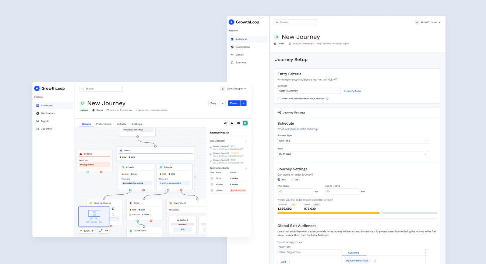
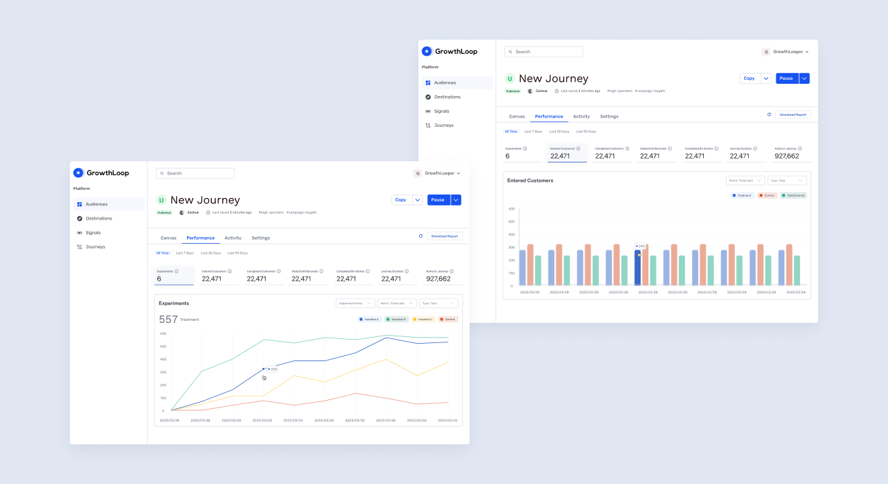
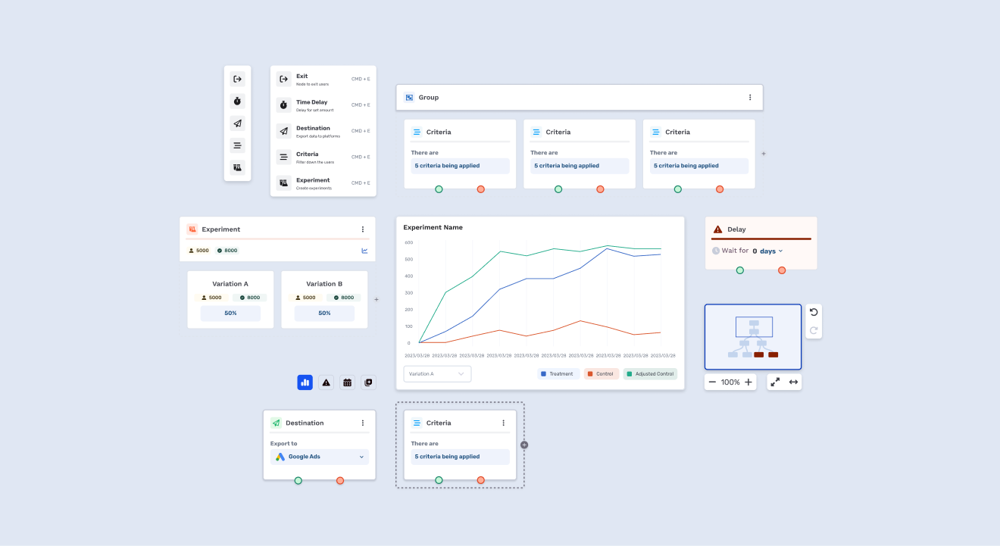
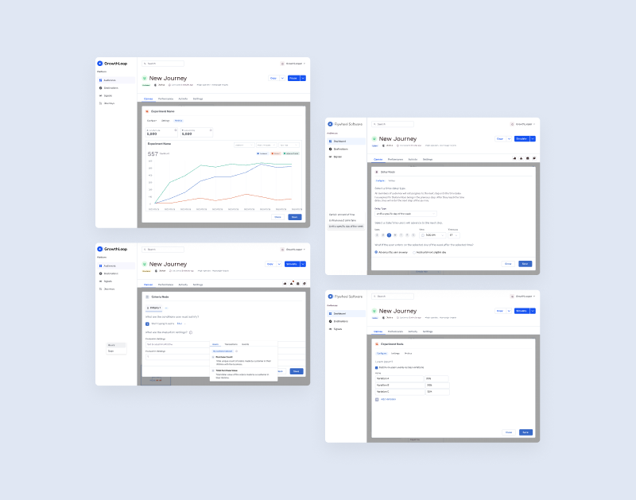
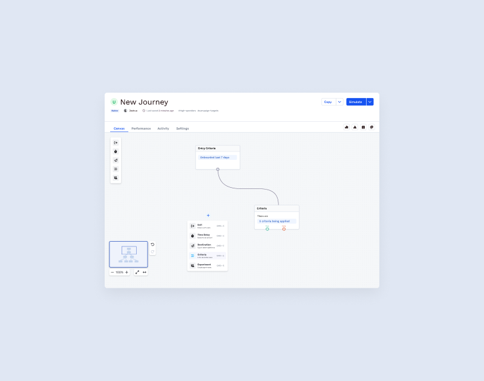
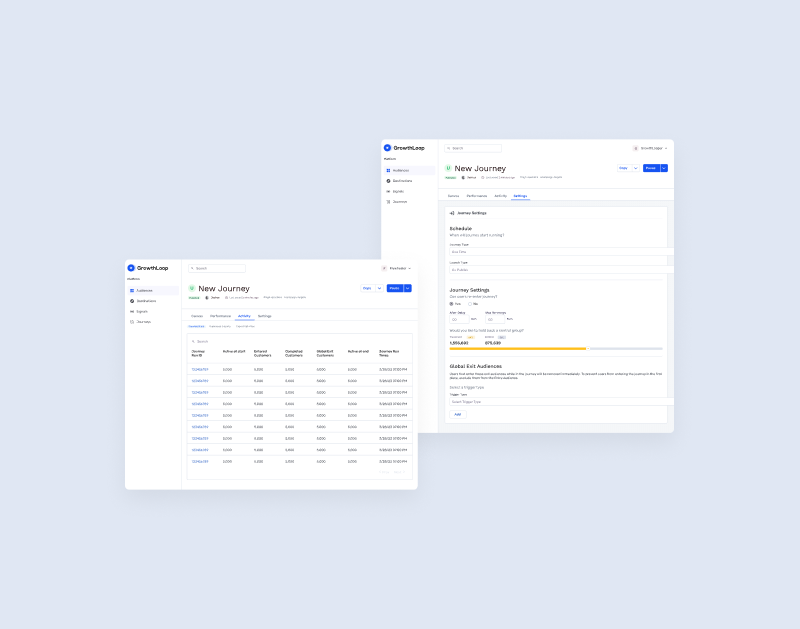

// Journey Builder
Project Description
GrowthLoop empowers the activation of first-party customer data, allowing seamless integration from your Modern Data Stack to essential destinations. The Journey Builder is where users build that seamless journey. With this builder, marketers can create cohesive customer experiences by coordinating messaging sequences throughout the customer lifecycle. They can also measure the impact of journey campaigns on revenue and other relevant metrics. With GrowthLoop’s centralized hub, marketing teams can efficiently manage journeys, allowing for faster insights and experimentation.

Problem
We worked closely with the GrowthLoop team to design the platform from the ground up, running product innovation workshops and close collaboration sessions with the client to shape its direction. Through multiple design iterations, we helped make data activation intuitive for marketing teams with no technical background.
Marketing teams had valuable customer data sitting in their warehouses but no straightforward way to put it to use. They needed to build audiences, launch campaigns, and track performance — without relying on technical teams to do it for them. Advanced audience segmentation was a key capability we focused on, giving marketers precise, granular control over how they defined and targeted their audiences.

Approach
We partnered with GrowthLoop from the earliest stages, running product workshops and design sprints to shape the platform’s direction, and iterated through multiple versions before landing on the current experience.
The core of that experience is a visual, drag-and-drop journey builder. Rather than asking marketers to write queries, we designed each step in a campaign — entry criteria, audience segments, delays, A/B experiments, destinations — as a node with plain-language configuration (“5 criteria being applied,” “Wait for 3 days,” “Export to Google Ads”). The logic of a campaign stays readable at a glance, even to someone with no data background.
Starting from a blank canvas is intimidating for a non-technical user, so we introduced a recipe library — pre-built journey templates like onboarding, churn winback, and cross-sell — giving marketers a working starting point instead of a blank page.
We also structured the builder around three distinct states: Build, Simulate, and Publish. This let teams validate a journey’s logic and estimated audience size before anything went live, catch issues early — errors surface directly on the flagged node, right on the canvas — and then monitor performance in production through dedicated health, error, and run-history views once published.

Outcome
GrowthLoop became a core platform for brands like NASCAR, Indeed, and the Boston Red Sox. Marketers can now run personalized, data-driven campaigns faster and with more confidence — building advanced, precise audiences and launching full customer journeys without needing an engineer in the loop.



Produktiv.agency
This project was completed as part of my employment at Produktiv. I would like to acknowledge the expertise and collaborative support of the agency’s senior designer Aaron Berge throughout the project. The collective effort ensured the project’s success and exceeded the client’s expectations.